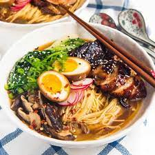

Chicken Ramen

How to Make Chicken Ramen
Looking for an easy bowl of Homemade Chicken Ramen that’s brimming with flavor and can be customized to your taste? Then this is the recipe for you!
You'll find a detailed ingredient list and step-by-step instructions in the recipe below, but let's go over the basics:
Ingredients
You'll only need five ingredients to make these irresistible Chicken Ramen:
- Boneless, skinless chicken breasts
- Chicken broth
- Instant ramen noodles (without seasoning packets)
- Onion
- Garlic
Try different Ramen flavors to switch things up!
Recipe instructions (taken from the book)
- Cook Chicken and Broth: Simmer seasoned chicken breasts in chicken broth, shred the cooked chicken.
- Sauté Aromatics: Sauté onions, garlic, and ginger until fragrant.
- Enhance Flavor: Combine sautéed mixture with chicken broth, simmer to infuse flavors.
- Prepare Noodles and Veggies: Cook ramen noodles, drain; briefly blanch julienned carrots.
- Serve: Divide noodles, add broth, shredded chicken, blanched carrots, greens, egg halves, green onions, sesame seeds; customize with soy sauce and optional toppings. Serve hot.
We have determined the nutritional value of oil for frying based on a retention value of 10% after cooking. Amount will vary depending on cooking time and temperature, ingredient density, and specific type of oil used.
Return to main page